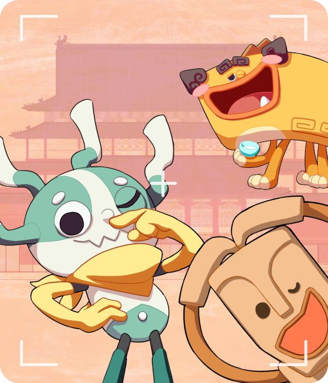
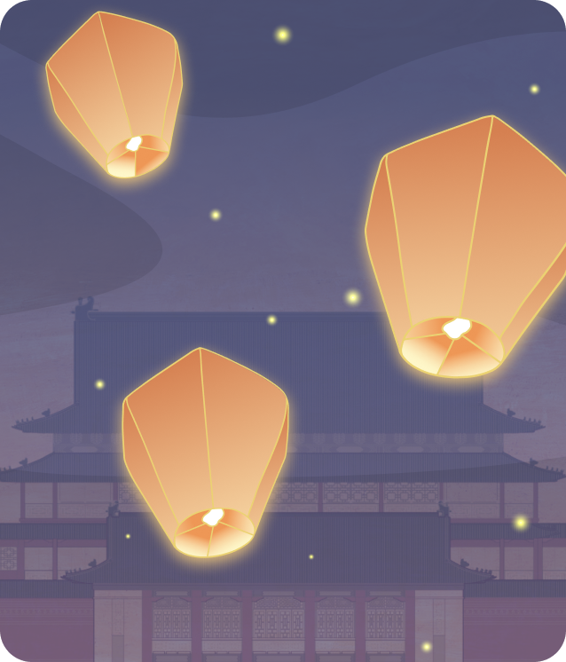
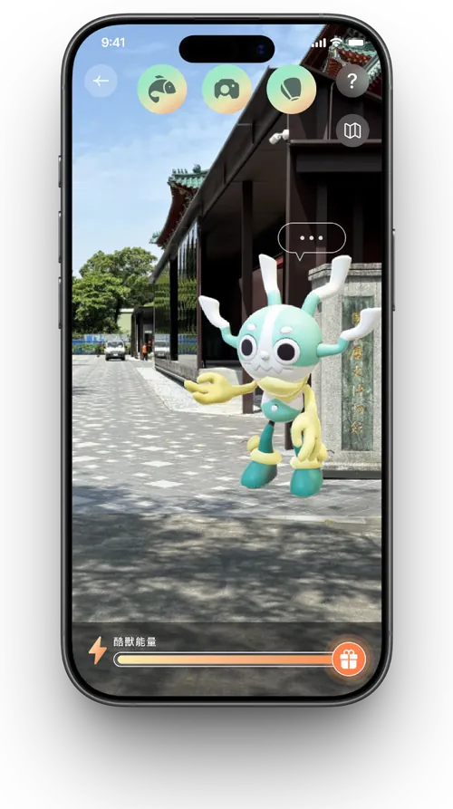
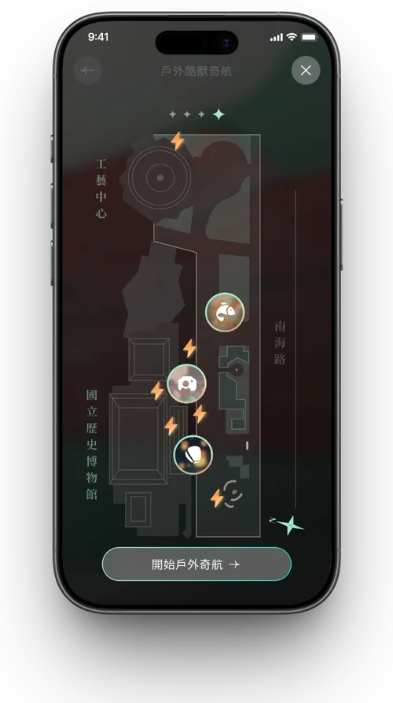
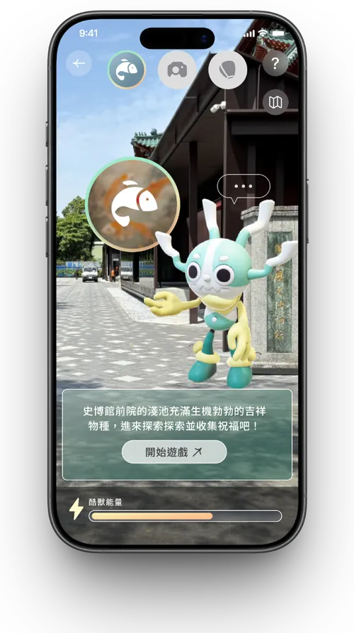
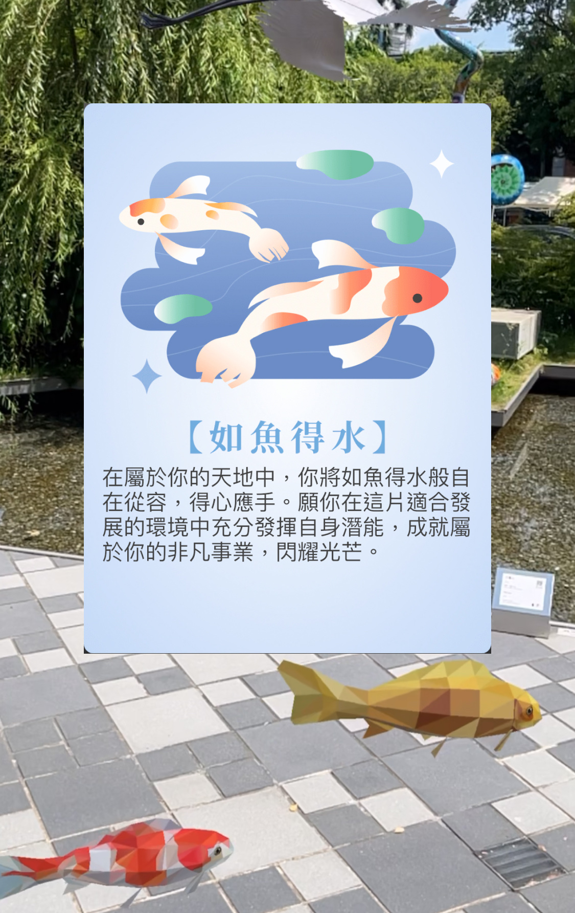
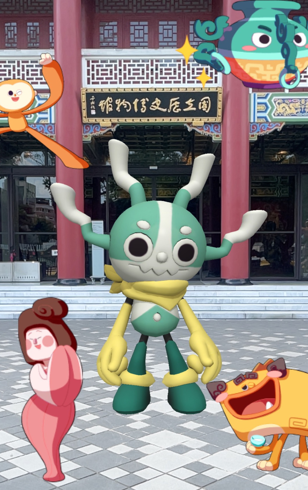

為重新開館的史博館設計戶外AR遊歷體驗，將庭院空間轉化為遊戲化探索場域，用虛擬吉祥物「酷獸」領著遊客一步步解鎖屬於自己的博物館旅程。
重新開館後的史博館希望戶外庭院不只是動線的一部分，而能成為吸引親子與年輕族群停留、互動的體驗場域，同時得兼顧原有文物與建築的莊重氛圍。
我設計了 4 款 AR 互動關卡，並以虛擬吉祥物「酷獸」作為引導角色，讓遊客循序解鎖庭院裡的每個角落；同時承接館方 App 功能模組擴充需求，確保新體驗能自然融入既有系統。
庭院從單純的動線空間，成功轉為遊客願意主動停留、互動的體驗場域：4 款 AR 關卡與 6 個隱藏探索點提供了明確的探索誘因，同時維持文物與建築原有的莊重氛圍，達成當初設定的雙重目標，也讓歷史博物館的文化內容以更輕鬆、更具互動感的方式被年輕世代看見。
「戶外酷獸奇航」總覽涵蓋錦鯉、拍照、點燈三種戶外關卡，另有 1 款室內隱藏探索關卡，酷獸帶著遊客解鎖庭院裡的每個角落。

AR 網撈庭院水池中悠遊的錦鯉與飛鳥，點擊即可獲得小卡集滿好運。

AR 拍照合成，與吉祥物角色同框互動，合影留念並拼貼照片。

AR 天燈繪製與施放，繪製圖案或寫下祝福後看著天燈冉冉升空。

AR 放大鏡搜尋，實際走進庭院各個角落仔細觀察，找出隱藏的文物資訊點。
從庭院入口到四款 AR 互動關卡，這是「酷獸」帶著遊客一路探索史博館的實際畫面。







酷獸 AR 導引關卡的完整使用者流程圖，涵蓋「帶我走／自由探索／隱藏探索」三種導覽模式的分岔判斷，以及各頁面之間的轉換邏輯。
移動滑鼠可預覽細節 · 點擊放大完整檢視
滾動或拖曳可查看完整流程圖細節
以下是史博館戶外庭院的活動現場實拍畫面，以及 AR 探索體驗上線後的實機操作錄影。
 AR探索選單 · 庭院雕塑旁實際操作
AR探索選單 · 庭院雕塑旁實際操作

網羅互動錦鯉 · 獲得祝福小卡
吉祥物大合照 · 拼貼完成畫面 開館點燈祈福 · AR 天燈施放
開館點燈祈福 · AR 天燈施放